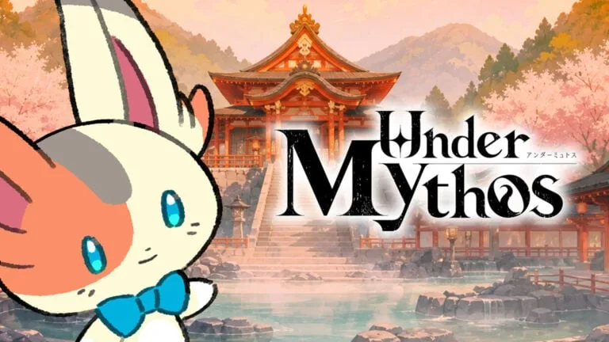

Luiso · 14 de septiembre de 2026 · 3 min de lectura
Hay proyectos que llaman la atención por su propuesta y otros que lo hacen por las personas que están detrás. Under Mythos pertenece a ambas categorías.
El nuevo JRPG es el primer proyecto de KADATH, un estudio japonés fundado por Yoichi Miyaji, productor de las series LUNAR y Grandia. El equipo reúne además a desarrolladores con experiencia en franquicias como Pokémon y Tales of the Abyss, y propone una combinación bastante poco habitual: administrar una posada de aguas termales mientras se exploran peligrosas mazmorras en un mundo que progresivamente cae en la locura.
El juego está previsto para 2028 en Nintendo Switch y PC a través de Steam. Sin embargo, KADATH todavía se encuentra preparando una versión vertical del proyecto y está buscando socios para continuar con su desarrollo, por lo que todavía falta bastante para conocer cómo terminará tomando forma la propuesta.
La premisa comienza de una manera bastante particular. El protagonista es un gato que llega a otro mundo mientras busca a su madre. Allí termina trabajando en una misteriosa posada de aguas termales, donde los primeros momentos de la aventura estarán centrados en recibir huéspedes y ampliar el establecimiento.
Pero esa tranquilidad no durará para siempre.
El mundo de Under Mythos irá transformándose progresivamente y la propuesta combinará gestión de la posada, exploración de mazmorras, búsqueda de recursos y supervivencia. AUTOMATON describe el concepto como una mezcla entre simulación de administración de una posada y una estructura de extracción, donde las expediciones pueden convertirse en situaciones de riesgo.
Ese contraste es precisamente uno de los pilares del proyecto: la comodidad de la vida cotidiana frente a la amenaza de un mundo que se vuelve cada vez más perturbador.
El proyecto también destaca por su equipo creativo.
Atsuko Nishida, conocida por su trabajo de diseño en Pokémon, participa como diseñadora e ilustradora. Su trabajo para Under Mythos incluye una interpretación propia de Nyarlathotep, una de las figuras asociadas al universo de Cthulhu Mythos, transformada aquí en un personaje con apariencia de gato.
El guion está a cargo de Takumi Miyajima, escritor de Tales of the Abyss, mientras que la música será responsabilidad de Noriyuki Iwadare, compositor de las series Grandia y LUNAR, además de otros trabajos como Ace Attorney.
Y al frente del proyecto se encuentra Yoichi Miyaji, productor de Grandia y LUNAR, quien define a Under Mythos como un JRPG híbrido e imprevisible que busca enfrentar dos extremos: el confort y la locura.
Aunque el anuncio ya permitió conocer la dirección artística y conceptual del proyecto, Under Mythos todavía se encuentra en una etapa relativamente temprana.
KADATH está preparando actualmente una vertical slice que servirá para establecer el nivel visual, sonoro y jugable que pretende alcanzar la versión final. El estudio también está buscando colaboradores para continuar con el desarrollo.
Por ahora, Under Mythos tiene una de esas premisas que resultan difíciles de ignorar: un JRPG donde administrar una posada puede ser tan importante como sobrevivir a una mazmorra, desarrollado por algunos de los nombres que ayudaron a construir varias de las grandes sagas del género japonés.